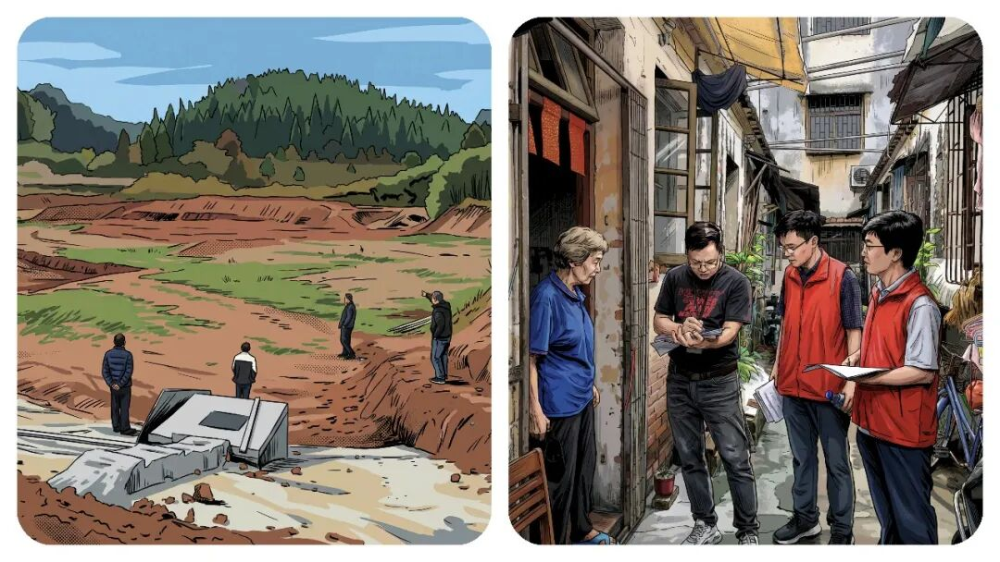
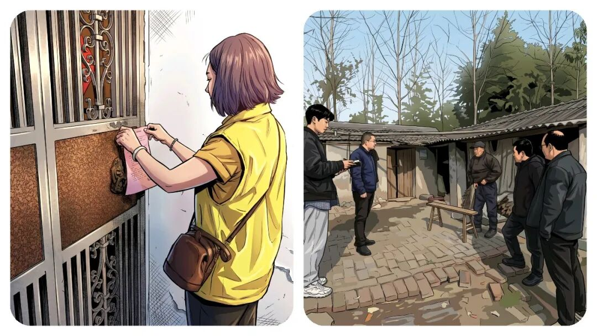
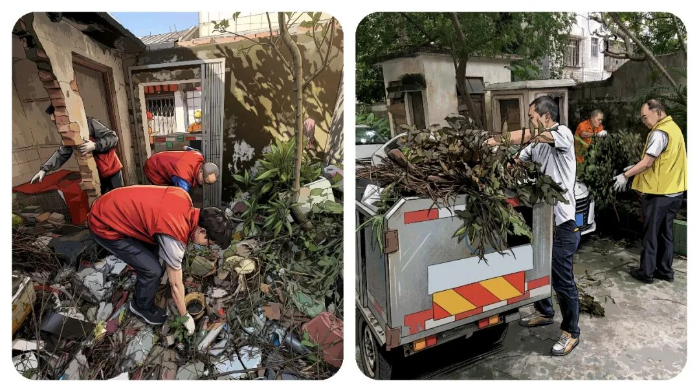
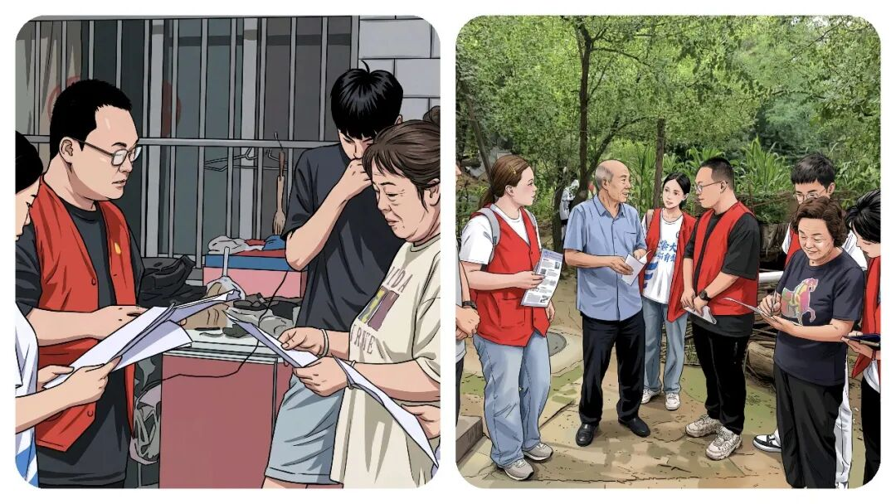

为什么“乡镇干部”的年轻人都想“躺平”？答案，比想象中现实。
原创
点击关注👉🏻
点击关注👉🏻
田间烟火
在小说阅读器读本章
去阅读
在小说阅读器中沉浸阅读
点击上方
蓝字
关注我们
第一时间获取更新
田间烟火🔥
大家好，我是【田间烟火】～
今天我们来聊聊“乡镇事业编到底有多累…”
以前在县城和乡下乡镇，还是有不少年轻人都挤破头想考事业编，抢着往里进。
工资虽然不高，胜在稳定，有编制、有保障
。
但这两年，越来越多的“乡镇工作人员”开始变得
“无欲无求”
，甚至有人干脆选择
“躺平”
。
这不是个别情绪，是许多乡镇年轻人正在经历的现实，特别是现在的90/00后。
为什么本该热火朝天干事创业的一线岗位，成了不少人嘴里的“混日子”
？
和身边的朋友聊了聊，不少真心话让人感慨。

01
分工不均：多干少干差别小
反正，有很多人刚进编那几年，的确有理想有冲劲。
愿意顶着风雨下村到屯入户排查，也乐意熬夜整理台账
。
一两次，几十次，也还好，但是一直持续这样，光靠热情支撑不住。
最让人无奈的，就是分工永远那么
“神奇”
：
忙的永远是那几个人，闲的总是那么闲，反正领导逮到谁就是谁干，一直跟进到底～
乡镇办公室里常常有这样的画面，
几个同事在会议室忙着对接检查，从
早到晚做材料
。
总有那么一两个，人影都不见到几次，或者呆坐喝茶、准时下班，过得自得其乐。
优秀考核？奖励晋升
？
事少的人照样分到和忙碌的人一样的工资，年底奖金几乎无差别。
有些人问，既然多干多累没区别，干嘛还要格外卖力
？
这种想法，可以说是，每个人的心声，你摆我也摆。
有同行在凌晨还在对使劲改数据，精选，调表，
核对数据，然后还要报审，报送，
第二天还要早到单位赶新任务。
也有同事每日按点打卡，拿一份稳定工资。
这中间的落差让不少肯负责的人心寒。
更有意思的是，
做多错多，风险越多，不做就没得啥也不用干
！
能拖就拖、能推就推，安全，传说中“保命”要紧
。

02
晋升难度：事业编“天花板”低
现在聊到这个晋升，就更让人心塞和无奈。
很多考进
事业编
的年轻仔，工作很久后才发现，相比
公务员
那种有职级进步、有遴选通道，事业编制其实“天花板”很低。
有些岗位名额有限，管理岗位名额少，可能排队5年10年都没跳动。
别说能力强，机会本来就少。
薪水和岗位晋级的差异太明显，像那种相邻市区同一年参加工作的
公务员和事业编
，到了第
五年，晋升和涨薪的速度已经完全不同
。
据公开数据显示，山东某县乡镇，事业编和同级公务员，五年后差距能拉开近千元。
公务员起点更高，还能参加遴选、互相调动，往后更容易熬出头往上走乡镇事业编却常年原地走。
你是认认真真的干，还是能省则省地混日子，说实话，结果差别并不大
。

03
缺乏反馈：努力看不到希望
我发现了，真正让人觉得煎熬的，
并不是“忙”，而是看不到希望
。
你全力以赴，想让群众工作做出成，但身边同事无动于衷，领导也多半默认太平无事就是好结果。
功劳难奖，过失没人担。
你多操心、多做事，却感受不到平衡的反馈。
久而久之，大家纷纷学会了“明哲保身”，
不主动
、
不出头
、
不揽事
，反而成了职场最佳生存法则。
谁还敢去趟浑水？
反过来看，其实并不是事业编没有前途，也不是所有乡镇都一团无精打采的气氛。
一些偏远小镇新推绩效细则，确实让踏实的人多拿点奖金，但范围不广，往往执行没多久又变回老样子。
又得地方，能多劳多得，有加班补贴。
不过也有在一线待过的老同事提醒，政策换一任领导容易打回原形，奖金很难保证每年落实。
并不是所有基层岗位的氛围都
低气压
。
以教育口为例，部分重点学校有激励机制，科研与教学成果挂钩加薪。
2019年北方某市部分乡镇小学教师，公开竞聘带动基层师资流动，一些偏远学校教师通过实际成果晋升。
但反过来，最常见的还是默默无闻和轮流等待。
这种“
熬资历
，
镀金
”的氛围，还在很多基础岗位蔓延。

04
根本原因：机制缺位磨平动力
问题在于，现在的年轻人
追求的不光是钱，多数人也想得到尊重、凭能力走出来
。
总有人问，为什么基层岗位总有那么多人在“混”、“等”？
答案很简单，机制激励弱，走关系看资历气氛重，干多干少没回报，久了自然没有动力。
不少网友讨论乡镇事业编的现状时，都提到一个特点：
老一批人求稳、年轻一批想闯
。
可现实下，想闯的往往被磨平了棱角，逐渐习惯于
“不多事，少一件是一件”。
不是不想努力，是怕不断努力的人，反而掉队，不如稳扎稳打等机会。
某县宣传线的青年，靠执行力和沟通能力，被市里选调，三年内实现跨层级提拔。
但这种机会说到底属于
极少数
。
绝大多数人，依然是过一天算一天。
现在体制内“
稳定
”依旧是关键词。
对一些有家庭、想安稳的人来说，乡镇岗位还是刚需。
但对于更多渴望有成就感、想被认可的人，基层的“
发挥空间
”让他们有些失落。
要让大家重新燃起干劲，单靠宣传层面的“致敬基层”没用。
关键还是机制上
要想办法，多劳多得，晋升透明，让付出的人能看到希望
。
说到底，普通人的努力，如果不能被公正对待和尊重，再高的起点，也会慢慢失去原动力。
这才是越来越多
乡镇事业编
选择“无欲无求”的根本原因
。
你身边有没有这种情况？
忙的永远那几个人，闲的永远那一批人？
欢迎评论区聊聊你的真实感受！
点点赞，你最好看～